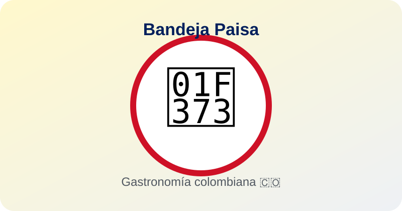
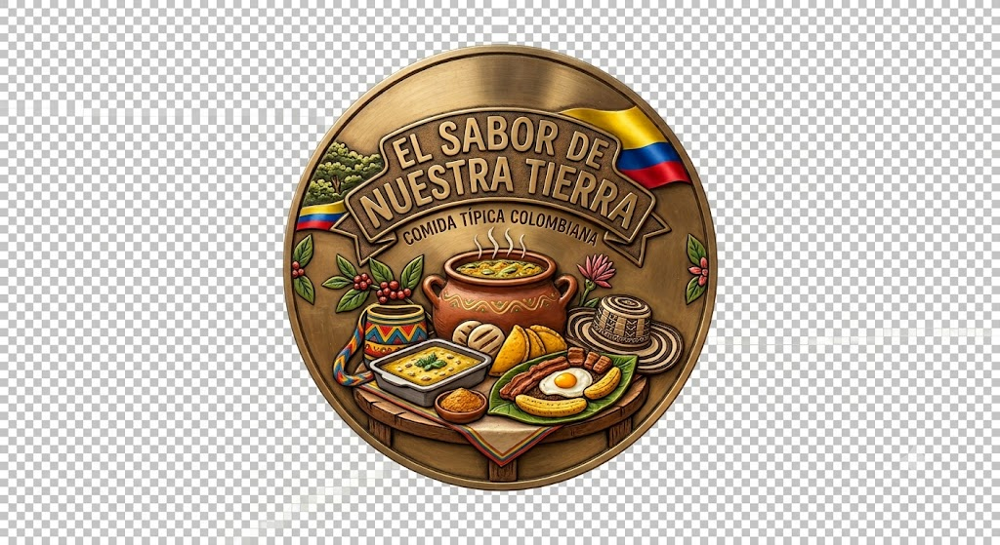
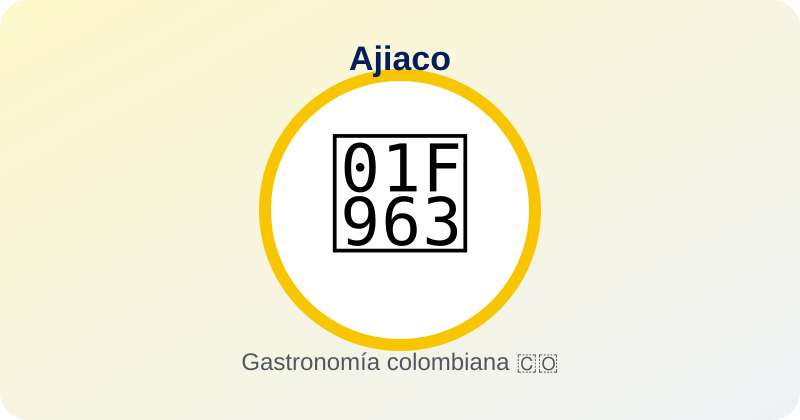
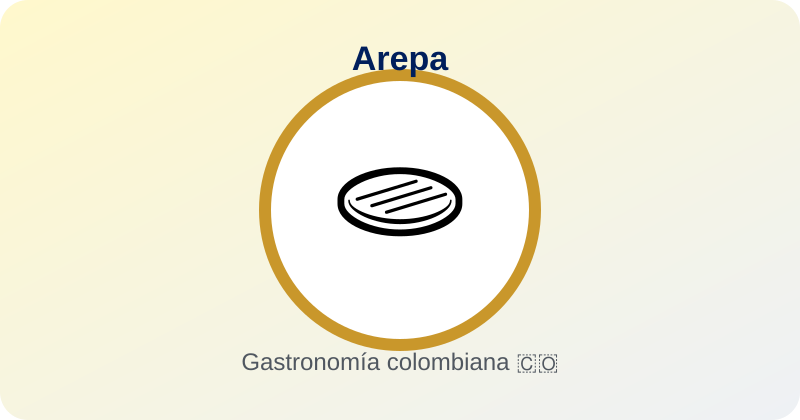
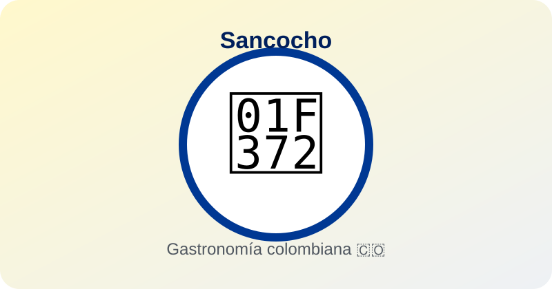
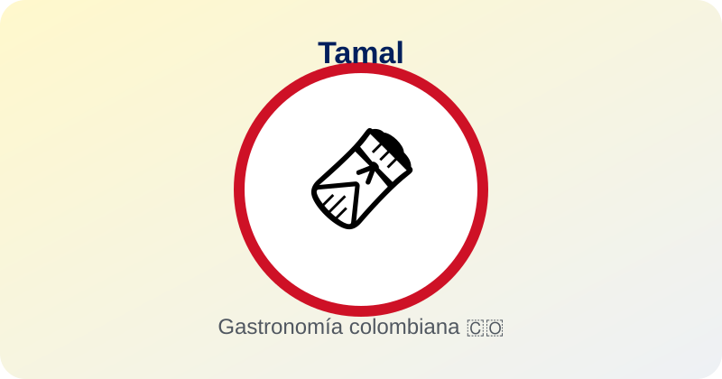
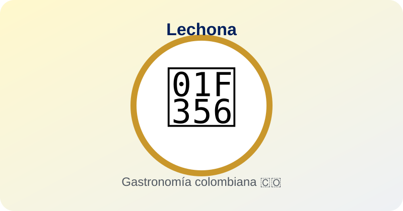

Región Andina
Bandeja paisa
Plato abundante asociado principalmente con Antioquia. Suele incluir fríjoles, arroz, carne molida, chicharrón, huevo, plátano, arepa y aguacate.

Aprende, descubre y saborea Colombia 🇨🇴
Colombia tiene una enorme diversidad cultural y geográfica. Sus comidas tradicionales cuentan historias de sus regiones, comunidades, ingredientes y costumbres.
Explorar comidasConoce algunos platos representativos y sus características.

Plato abundante asociado principalmente con Antioquia. Suele incluir fríjoles, arroz, carne molida, chicharrón, huevo, plátano, arepa y aguacate.

Sopa tradicional preparada con pollo y diferentes papas. Las guascas aportan uno de sus sabores característicos y suele acompañarse con aguacate y mazorca.

Preparación a base de maíz con muchas variantes regionales. Puede ser asada, rellena, delgada o gruesa, según la tradición local.

Sopa sustanciosa que cambia según la región. Puede prepararse con carnes, yuca, plátano, papa, mazorca y otros ingredientes.

Preparación de masa de maíz con diferentes rellenos, envuelta tradicionalmente en hojas. Existen muchas versiones regionales.

Preparación tradicional a base de cerdo, arroz, arvejas y condimentos. Es especialmente reconocida en la gastronomía del Tolima.
El territorio colombiano influye directamente en sus ingredientes y recetas.
Arepas, ajiaco, bandeja paisa, tamales y muchas preparaciones con papa y maíz.
Arroz de coco, pescado, patacones, suero costeño y preparaciones con plátano.
Gran variedad de pescados, mariscos, coco, hierbas y productos del bosque.
La carne y las preparaciones asociadas a la cultura llanera tienen gran importancia.
La cocina aprovecha productos amazónicos, pescados de río, frutas y conocimientos tradicionales.
Se destacan ingredientes marinos y sabores con influencia caribeña.
La gastronomía también es una forma de conservar la memoria cultural.
Los productos disponibles en cada territorio ayudan a explicar la variedad de platos.
Las recetas se transmiten entre generaciones y conservan costumbres familiares y comunitarias.
El clima, la geografía y las culturas regionales influyen en la alimentación.
Conocer la gastronomía ayuda a comprender la diversidad cultural de Colombia.
Comprueba cuánto aprendiste. Selecciona una respuesta por pregunta.